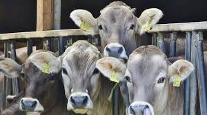
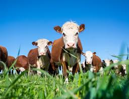
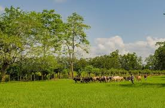

Bienvenido a AgroBovino
Somos tu mejor opción en la compra de ganado de alta calidad y la maquinaria agrícola más avanzada para mejorar tu producción.
Nuestra Galería



Nuestros Servicios
Proveemos la mejor selección de ganado bovino para la producción, así como maquinaria agrícola de última generación para maximizar la eficiencia de tu negocio.
Sobre Nosotros
En AgroBovino contamos con más de 20 años de experiencia en el sector agrícola, proporcionando a nuestros clientes productos de excelente calidad y un servicio personalizado.